Generative Design Project
Overview of the Part and Application
General description:
At the back of the model, there are five neatly arranged rectangular slits—each designed to house 60 x 10 x 3 mm magnets. These slits are precision-extruded 3 mm into the surface, offering a streamlined way to integrate magnetic attachments. The magnets are then glued onto the slits in order to make sure they don't fall off the model. The overall dimensions of the model are compact, standing at 74 mm in height and 70 mm in width, with the back section extending 5.8 mm outward.
On the opposite side, closer to the bottom, is a dedicated wire holder. This section features two circular rods that extend 32 mm outwards from the main bar into a circle with a 20 mm diameter, providing a tidy loop for organizing wires or cables with a barrier on the end to make sure it doesn't fall. Above the wire holder is the headphone holder, designed with both form and function in mind. Also reaching 32 mm from the bar, it transitions into a broad arc shape. At the end is an arc-shaped barrier so that the headphones also don't fall off the end.
Purpose:
This model allows the user to have the ability to place their headphones anywhere! Imagine this, you are walking using your headphones and sit down in order to focus on using some machine in your workspace and have a lot of things all over the place, you want to put your headphones down somewhere but not have it get in the way of everything else. You can take the magnetic headphone holder and attach it into anything nearby that's magnetic and place your headphones there, as well as that charger you keep losing. Now you're done working, and you want to go watch the greatest youtuber ever on your desktop, you can grab the headphone holder easily since it uses magnets (and not screws or other things which require tools and time to remove) and take it to your desktop and attach the headphone holder onto your desktop and place any wires onto it while you watch youtube.
Obstacle and Preserve Geometry
In generative design, defining the geometry in the generative design studio is important in order to make sure the generated model is correct.
Starting Shape:
The starting shape is the conjunction of a few different bodies connected together that itself connects to all the important components of the model. It includes most of the magnet holder bar, this is to reduce overall material to make it lightweight while making sure not to remove material necessary to hold the magnets in place. It also includes the part where the wires and headphones will lay directly which connect to the barriers for the wire and headphone holder.
Preserve Geometry:
The preserve geometry focused on key structural elements critical to the performance of the model.
- The central bar connected to the starting shape: This is where the magnets directly lay to make sure the magnets fit tightly just right and material isn't removed that would make it difficult to keep the magnets in place.
- The circular barrier for the wire holder: This part has to remain solid in order to make sure the wire doesn't accidentally slide off if the model is placed at a downward angle and defines how far the wire holder should go. This part also experiences the structural load that the wire holder will experience, changing how the generative design will make the connection between the central bar and the barrier.
- The headphone holder's arc-shaped barrier: This part also has to remain solid to make sure the headphones don't accidentally fall off and to define the length the headphones holder will go. This part also experiences the structural load that the wire holder will experience, changing how the starting shape will change in the generative design process.
Obstacle Geometry:
Obstacle geometry is also important to define the areas where no material should be generated to avoid interference with the functionality of the model itself.
- Magnet slots: I modeled the size of the magnets and placed them where they will go just to make sure that no material is generated here that would make it difficult to insert the magnets or even prevent the magnets from staying where they should be.
- Thin separation bar between the wire holder and headphone holder: When I was generating different iterations sometimes it would connect the wire holder and headphone holder together and try to use the wire holder area as support for the headphone holder since it experiences bigger forces. In order to make sure it left enough space to put your wires in a natural manner I made a thin bar just above the wire holder barrier and made it an obstacle geometry so that it would stop generating material there and make the supports for the headphone holder in such a way that doesn't conflict with the wire holder itself.
- Large headphone donut: I made a circular donut shape that lays just on top of the headphone holder so that the generative design would not generate supports directly where the headphones will lay, nor will they generate support in the left or right of it so that the headphones themselves can lay in the holder without being blocked by anything.
Load Case Application and Structural Constraints
Types of forces:
A general force of gravity was applied by default across the whole model to account for its own weight.
Forces on the headphone holder:
- A downward force of 3N: This force was applied to simulate the weight of my headphones resting on it.
- 2 side forces of 2.2N each: These two forces directly going to the headphone holder from the left and from the right simulate someone bumping on it or placing the headphones from the side with some force, as if they were in a hurry, for example.
- Moment of 0.2N: This force simulates the twisting action that could happen during use, like if you placed the headphones at an angle and then twisted it to correct the alignment.
Forces on the wire holder:
- A downward force of 1N: This represented the weight of a cable you might place in the wire holder.
- Moment of 0.2N: This force simulates slight twisting or tugging that might occur when removing the wire from the model.
In order to come up with these forces I measured the weight of my own headphones (about 256 grams) and calculated the force in Newtons it might cause on the headphone holder itself, which came up to about 2.5N. I then rounded up to 3N just in case. From here I put slightly smaller forces and applied it to the sides (it can also hold the headphones if the model is twisted 90 degrees). For the moment I calculated the torque by multiplying the 2.5N from the headphones and multiplying by a distance of 0.05M (as if the band of the headphones was pulled about 50mm away from the mount center) resulting in about 0.125Nm, I then considered this a lower bound and simply rounded up to 0.2N. I arbitrarily chose 1N for the downward force of the wire holder since one wire should not cause the part to experience forces bigger than that.
Structural Constraints:
Structural constraints were applied to the back area of the model, excluding the magnet slits, to simulate the mounting surface that the part would be attached to. This locked the back portion in place, allowing the rest of the design to respond realistically to the applied forces.
Real-World Testing:
Before SLS printing I tested the final model by printing it in PLA. The model was able to hold the headphones without a problem and hold as many wires as I could fit into the wire holder. I was also able to push/pull on the barrier edges of both holders from different angles and they did not experience any negative effects. I also tested the model by dropping it onto the headphone holder mount, placing it at weird angles, putting the part itself at an angle and placing the headphones on it and they all worked fine.
I did not test removing the model itself completely towards you and always removed the model by pushing it to the edge of the metal surface I was using and then peeled it off. The reason for this is because I did not want to glue my magnets onto the PLA prototype but instead made the holes just tight enough so they fit without falling. But once it attached onto a metallic surface and I tried to pull it directly towards me the magnets would stay onto the surface, because of this I did not anticipate the diffculty to remove the model if pulling directly towards ones self. This is because is uses 5 neodymium magnets of size 60x10x3mm. Future iterations can include some edge at the top that makes it easier to pull towards you, but it's still very easy to push the entire model to the edge of the surface and peel it off with ease.
Critique of Generative Design
Usefulness in Practical Engineering:
Generative design proved to be a powerful tool for creating a highly efficient structure tailored exactly to the forces and constraints I needed. Instead of manually trying to guess the most optimal geometry while minimizing material, the software explored a wide range of possibilities, optimizing for material use while still ensuring strength where it mattered. For prototyping especially, it offered a significant advantage: faster iteration, lighter designs, and creative and interesting shapes that would have been hard to come up with manually.
Limitations Encountered:
The process wasn’t without its limitations. One of the biggest challenges was setting up the initial conditions properly—getting the preserve and obstacle zones correct, and fine-tuning the loads and constraints to guide the outcome without over-restricting it. Small mistakes in setup could lead to unusable results or the need for multiple iterations to get something truly practical. At times there were some instances where it ignored my obstacle geometry and took the path through the obstacle geometry and just deleted the specific material that was directly in the area of the obstacle geometry, instead of forming paths somewhere else. This and the fact you would have to wait some time for the generative design to converge to a final version made it a process that takes a significant amount of time, especially if you are working with more complex geometry.
Applications and industries:
Some industries/applications that this could be very useful in are:
- Automotive: To produce lightweight parts that can contribute to better performance.
- Aerospace: Reduce weight without sacrificing strength to produce parts with optimal performance and efficiency.
- Consumer products: Things like ergonomic furniture, sports equipment, and other items that might benefit from the balance of strength, weight, and form that generative design can create.
However, it can also be a detriment in industries or projects where simplicity, low cost, or traditional manufacturing methods are simply better. Generative design can produce complex shapes that are more efficient but are also significantly more expensive to actually manufacture or mold using standard methods.
Gallery:
Table of forces:
| Force | Magnitude | Location | Rational |
|---|---|---|---|
| Gravity | 9.807m/s^2 | All parts | Default |
| Force 2 | 3.0N | Headphone holder barrier | Simulate weight of headphones |
| Moment 1 | 0.2Nm | Headphone holder barrier | Simulate twisting action that could be experienced onto headphone holder |
| Force 3 | 2.2N | To right of headphone holder barrier | Simulate bumping the headphone holder or placing it from the side with force |
| Force 4 | 2.2N | To left of headphone holder barrier | Simulate bumping the headphone holder or placing it from the side with force |
| Force 5 | 1.0N | Wire holder barrier | Simulates weight of wires |
| Moment 2 | 0.2N | Wire holder barrier | Simulates force of twisting from slight twisting or pulling on wires |
Generative Design:
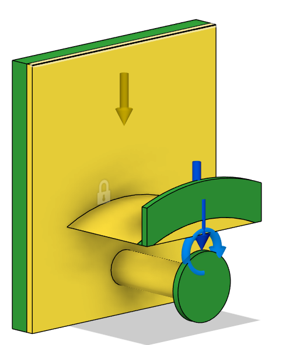 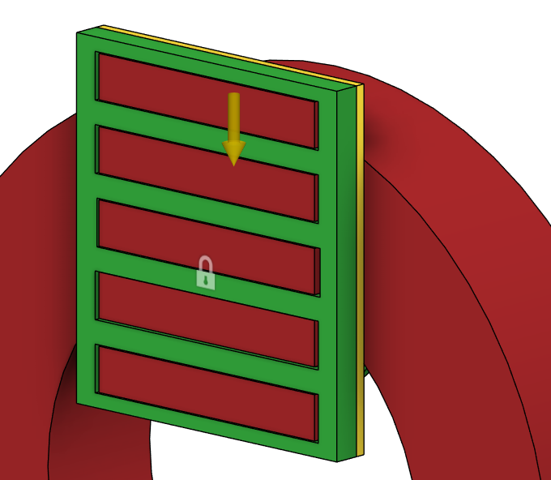 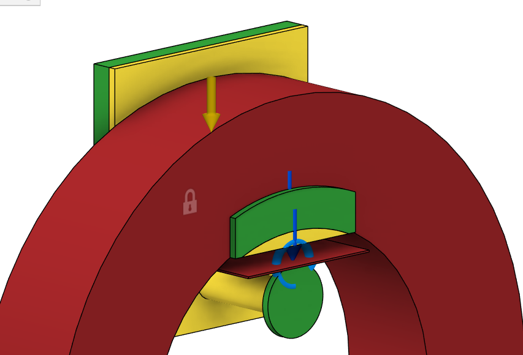 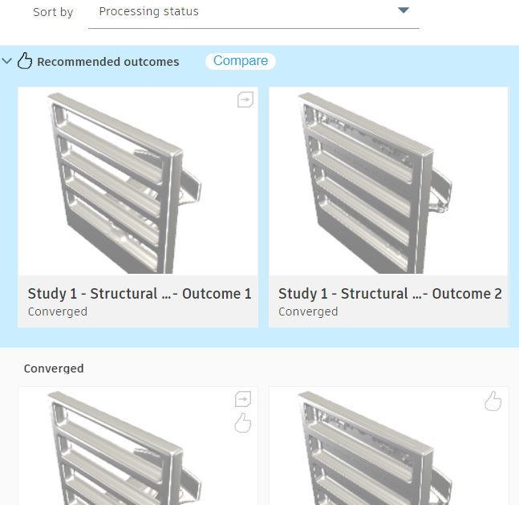 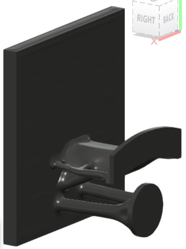This is an example of the generative design fusing the preserve geometries of the wire holder and headphone holder, even though there was a thin layer of obstacle geometry between them, and it also ignored the starting shape rod connected to the wire holder barrier entirely:
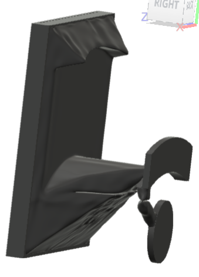Iterations:
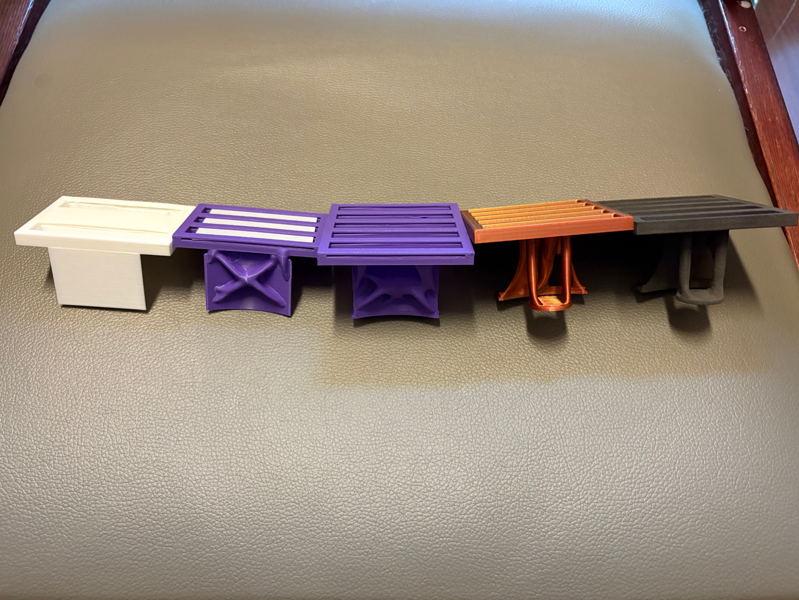
PLA Real-World Prototype:
 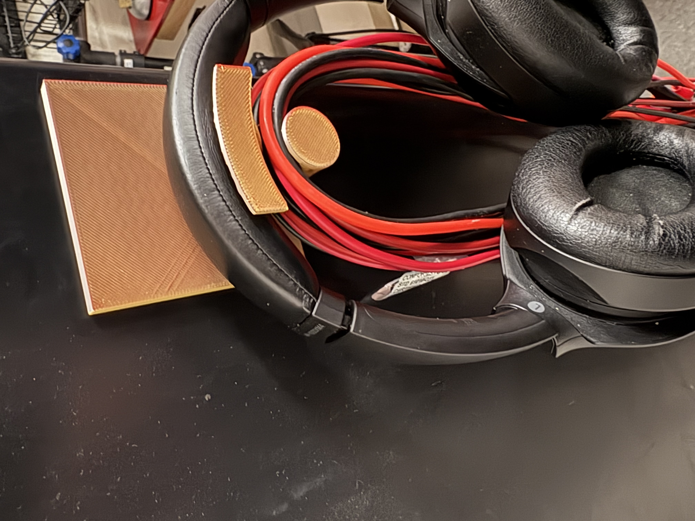
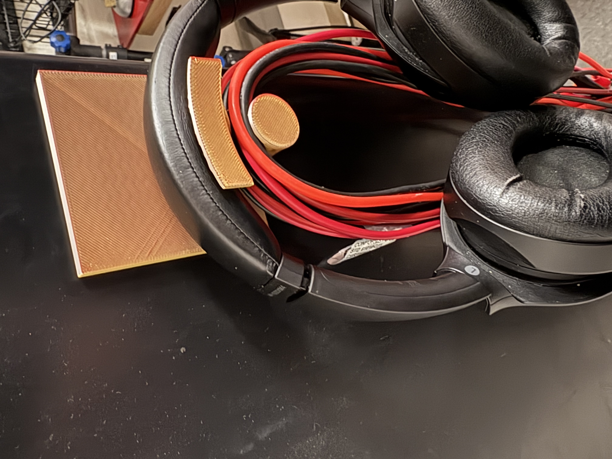
This is where the generative design ignored the obstacle geometry and generated material there and at the end simply deleted that area, making an unwanted gap in the support.
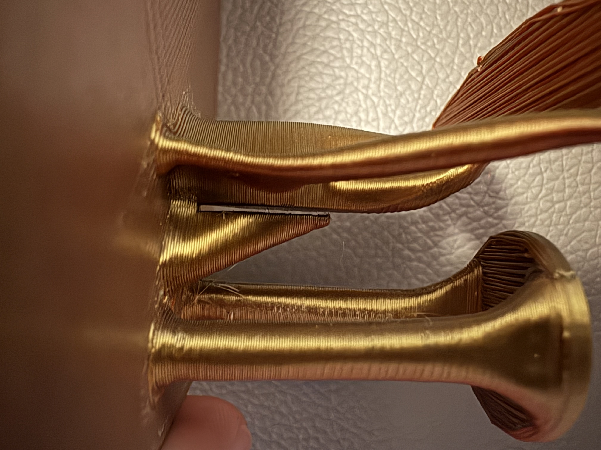Final SLS Printed Part:
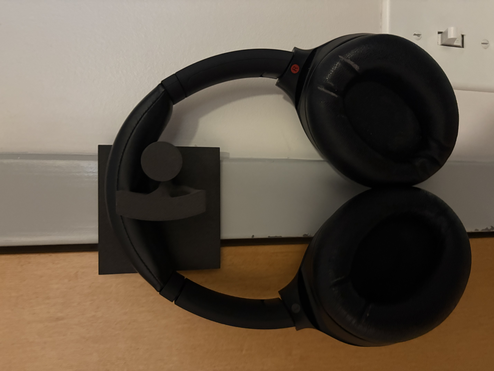 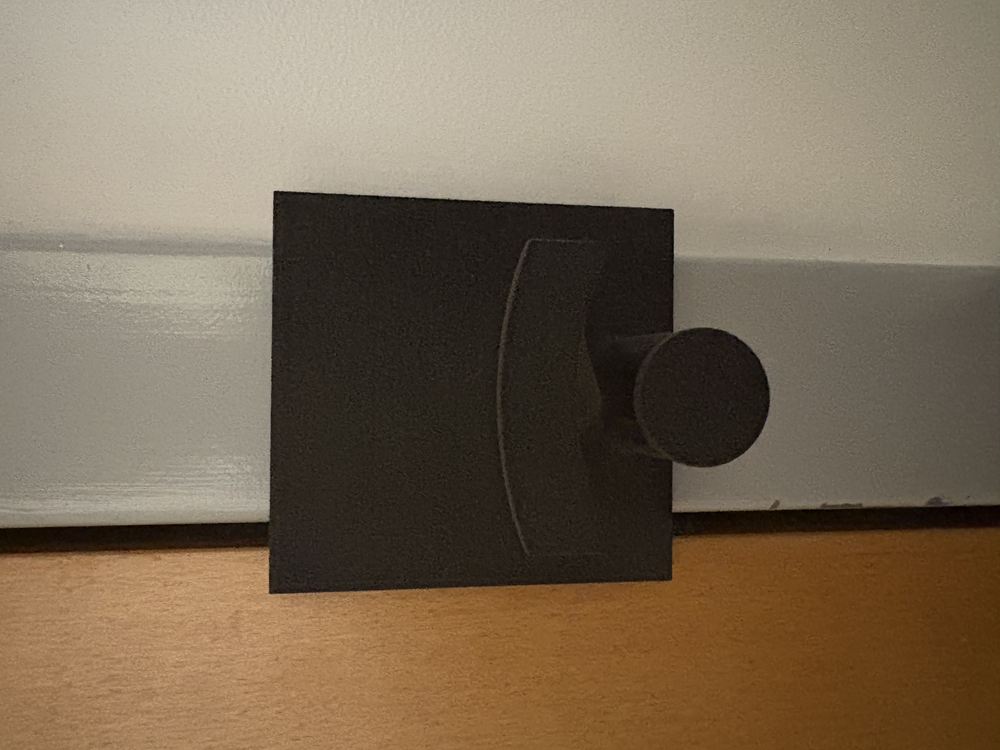